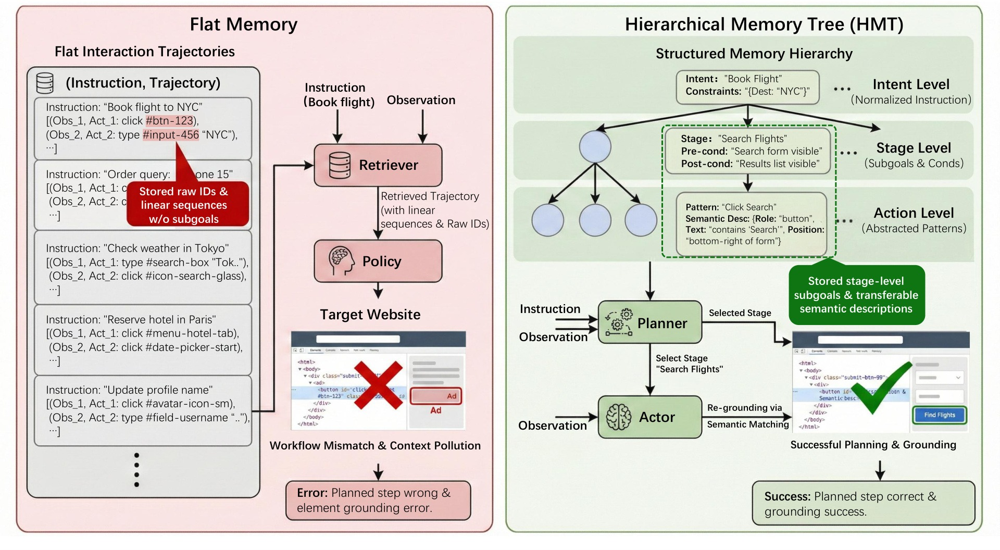
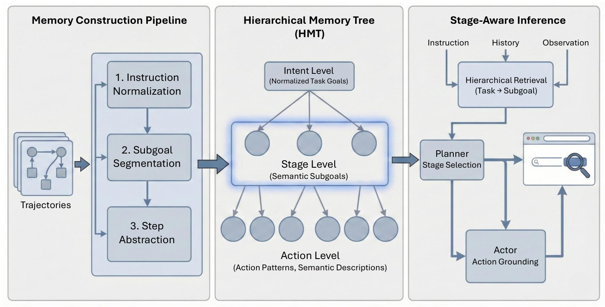
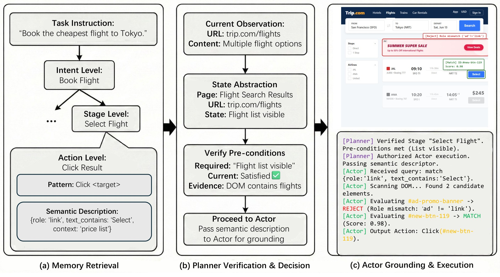
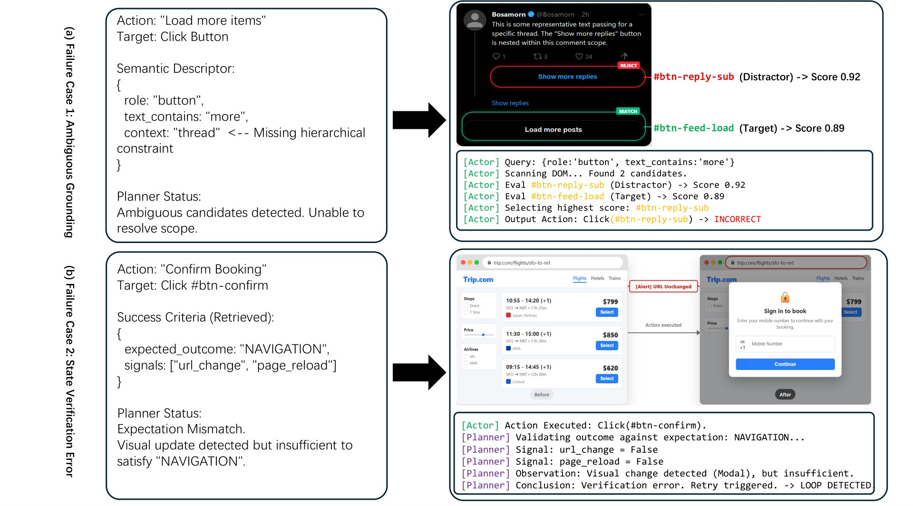

웹 에이전트 메모리는 왜 새 사이트에 가면 갑자기 바보가 될까
흐름: trajectory retrieval의 직관 → 새 사이트에서 깨지는 이유 → intention-execution entanglement
웹 메모리의 문제는 "기억이 부족하다"보다 "기억이 너무 섞여 있다"에 가깝다
HMT의 출발점은 최근 memory-based web agent들이 왜 unseen website에서 약해지는지를 매우 정확하게 짚는 데 있다.
기존 웹 에이전트 메모리 방법은 대개 성공 trajectory를 저장하고, 새 태스크에서 비슷한 예시를 retrieval해 다시 쓴다. 얼핏 보면 맞는 방향이다. 긴 작업에서는 과거 성공 절차를 참고하는 게 분명 도움이 된다. 문제는 웹에서는 high-level intent와 low-level execution detail이 함께 저장된다는 점이다.
예를 들어 항공권 찾기라는 의도는 재사용 가능하지만, #btn-123 클릭 같은 구체 DOM identifier는 Expedia에선 맞아도 Trip.com에선 바로 깨진다. 논문은 이 현상을 intention-execution entanglement라고 부른다. 즉 메모리가 틀린 건 아닌데, 맞는 의도와 틀린 실행 세부사항이 한 덩어리로 retrieval되는 것이다.
"current methods struggle to generalize across unseen websites ... flat memory structures entangle high-level task logic with site-specific action details"
이 문제는 단순 grounding error보다 더 크다. retrieval 자체가 workflow의 잘못된 단계로 agent를 끌고 가면서 workflow mismatch와 context pollution을 동시에 일으킨다.

HMT 한눈에 보기
흐름: instruction normalization → subgoal segmentation → step abstraction → planner/actor inference
이 논문은 메모리를 세 층으로 나눈다
HMT의 핵심은 trajectory를 잘 저장하는 것이 아니라, trajectory 안에 섞여 있던 서로 다른 수준의 정보를 다른 층에 따로 보관하는 것이다.
구조는 세 단계다.
Intent level: 사용자 instruction을 표준화한 task goalStage level: pre-condition / post-condition이 있는 semantic subgoalAction level: raw ID를 버리고 남긴 action pattern + semantic element description
여기서 가장 중요한 층은 사실 Stage level이다. 기존 retrieval은 보통 "이 instruction과 비슷한 예시"를 찾지만, HMT는 "지금 화면이 어떤 subgoal 단계에 있는가"를 함께 본다. 그래서 같은 book flight intent라도 검색 폼 단계인지, 결과 리스트 단계인지, 결제 직전 단계인지에 따라 다른 memory path를 꺼내게 된다.

action memory도 그냥 "버튼 기억"이 아니다
HMT는 action level에서 raw element identifier를 버리고 semantic element description만 남긴다.
예를 들어 source site에서 #btn-sfo-136을 눌렀다고 해도, 그걸 그대로 저장하지 않는다. 대신
- role이
link인지button인지 - text가 무엇을 포함하는지
- 현재 폼이나 리스트와 어떤 상대적 맥락을 갖는지
같은 semantic feature를 저장한다. 논문의 표현을 빌리면 Click #btn-123이 아니라 Click the search button 쪽에 더 가깝다. 이게 있어야 사이트가 달라도 grounding이 가능해진다.
Planner와 Actor
흐름: 현재 상태 추상화 → stage 검증 → semantic grounding → confidence fallback
HMT는 retrieval 후에 바로 행동하지 않고, 먼저 "지금 이 단계가 맞는지" 확인한다
이 논문이 기존 memory work보다 분명히 한 단계 더 나가는 지점은 Planner와 Actor를 분리했다는 점이다.
Planner는 현재 observation을 보고 retrieved stage의 pre-condition이 맞는지 확인한다. 예를 들어 flight list visible이 있어야만 Select Flight stage가 유효하다. 이 검증이 맞아야만 Actor가 action level descriptor를 받아 실제 DOM에서 element를 찾는다.
즉 HMT는
- task similarity로 memory를 대충 꺼내고
- 현재 페이지가 그 stage에 맞는지 확인한 뒤
- semantic descriptor로 target element를 다시 grounding
하는 방식이다.
이 구조 덕분에 flight booking 태스크에서 flat retrieval이 checkout action을 잘못 가져오는 문제를 많이 줄인다. 논문 retrieval case에서도 flat baseline은 Place Order나 Add to Cart 같은 temporally wrong action을 상위에 가져오지만, HMT는 Click Item, Sort Price, Next Page처럼 현재 search stage에 맞는 동작만 남긴다.

실험 결과
흐름: Mind2Web cross-website → WebArena total SR → mechanism/ablation으로 왜 잘 되는지 확인
이 논문이 진짜 강한 곳은 cross-website generalization이다
HMT는 DOM 구조가 거의 유지되는 설정보다, 사이트 구조가 바뀌는 설정에서 훨씬 더 큰 의미를 가진다.
논문은 Mind2Web과 WebArena를 모두 평가한다. 핵심 수치는 이렇다.
- Mind2Web
Cross-TaskStepSR: HMT48.5, AWM45.1 - Mind2Web
Cross-WebsiteStepSR: HMT가 AWM 대비+6.0 - WebArena total TaskSR: HMT
38.7 - WebArena에서 GitLab
+5.8, CMS+5.0
해석도 명확하다. 사이트 구조가 거의 안 바뀌는 cross-task에서는 flat memory 계열도 어느 정도 먹힌다. 하지만 cross-website로 가면 raw ID와 linear workflow가 바로 깨지고, 이때 semantic descriptor와 stage alignment를 가진 HMT가 크게 앞선다.
메커니즘 분석도 주장과 잘 맞는다
HMT는 단지 최종 success rate만 높인 게 아니라, retrieval quality와 grounding robustness가 실제로 어떻게 달라졌는지 따로 보여준다.
- Mind2Web Cross-Website Recall@5: HMT
84.2, flat retrieval65.8 - Grounding success: raw identifier는 cross-website에서
12.4까지 붕괴, semantic descriptor는76.8유지
이 수치가 중요한 이유는 "왜 성능이 올랐는가"를 설명해주기 때문이다. HMT는 더 좋은 LLM trick을 쓴 게 아니라,
- 현재 단계와 맞는 memory를 더 잘 가져오고
- 가져온 action을 새 사이트에 더 잘 grounding
하기 때문에 이긴다.
또 ablation도 깔끔하다.
| 설정 | Mind2Web CW StepSR | WebArena TaskSR |
|---|---|---|
| Full HMT | 39.7 | 38.7 |
| w/ Flat Memory | 33.2 | 32.1 |
| w/o Pre/Post-conditions | 37.1 | 36.2 |
| w/ Raw Element Identifiers | 12.4 | 34.5 |
| w/o Planner | 35.8 | 33.5 |
특히 raw identifiers -> 12.4는 거의 논문의 핵심 문장처럼 읽힌다. 새 사이트에서 진짜 깨지는 건 reasoning이 아니라 grounding이다.
이 논문이 아직 못 푼 것
흐름: ambiguous grounding → subtle transition verification → 다음 연구 질문
HMT는 stage alignment는 많이 해결했지만, transition prediction은 아직 약하다
이 논문이 특히 좋은 이유는, 자기 한계도 다음 연구 문제로 거의 그대로 남겨둔다는 점이다.
논문 qualitative failure가 두 가지인데, 둘 다 지금 웹 에이전트 연구의 다음 병목을 보여준다.
첫째는 ambiguous grounding이다. text_contains: more 같은 generic descriptor만으로는 Load more posts와 Show more replies를 구분하지 못한다. 즉 semantic descriptor가 있어도 계층적 structural context가 더 필요하다.
둘째는 state verification error다. Single Page Application에서 클릭 후 modal popup은 떴지만 URL은 안 바뀌는 상황에서, Planner는 NAVIGATION event가 일어나지 않았다고 보고 action을 실패로 오판한다. 그래서 retry loop에 빠진다.

이 한계는 중요하다. HMT는 이미 지금 어느 stage에 있는가는 꽤 잘 맞춘다. 하지만 이 action 이후 어떤 변화가 일어나야 정상인가까지는 충분히 못 본다. 즉 웹 에이전트 연구의 다음 단계는 계층 메모리만으로는 끝나지 않고, transition-aware verification으로 넘어가야 한다는 걸 보여준다.
이 논문을 어떻게 봐야 하나
흐름: HMT의 위치 → 왜 중요한가 → 어디까지 왔고 어디서 멈추는가
HMT는 flat memory 이후 세대의 기준점이다
Synapse가 trajectory abstraction을 밀었고, AWM이 workflow abstraction을 밀었다면, HMT는 웹 에이전트 메모리에서 "현재 workflow stage를 맞추는 것"의 중요성을 가장 선명하게 만든 논문이다.
이 논문의 진짜 기여는 계층 트리 그 자체보다,
- intent와 execution을 분리해야 한다는 점
- stage를 pre/post-condition으로 검증해야 한다는 점
- grounding은 raw ID가 아니라 semantic descriptor로 해야 한다는 점
을 동시에 하나의 구조로 묶었다는 데 있다.
그리고 동시에 한계도 분명하다.
- descriptor는 아직 더 구조적이어야 하고
- state verification은 URL/DOM 변화 이상으로 확장돼야 하며
- action outcome prediction을 더 잘 해야 한다
그래서 HMT는 완성형이라기보다, 웹 에이전트 memory 연구가 어디까지 왔는지 보여주는 아주 좋은 분기점처럼 읽힌다. flat memory의 한계를 넘어섰지만, next-state verification이 왜 다음 문제인지를 그대로 드러내기 때문이다.